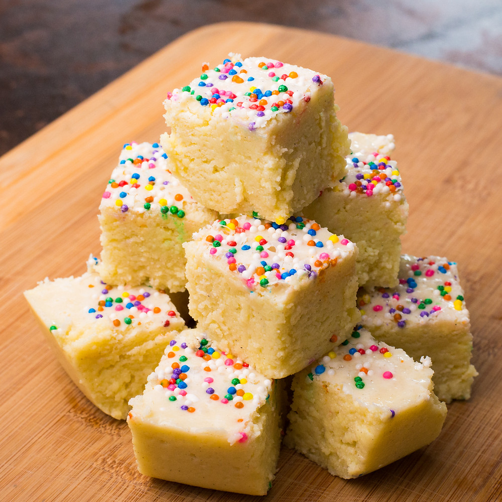

Gulam Jamun
Ingredients
- Sugar
- bread
- Oil
Recipe
- Combine the milk powder, all-purpose flour, semolina, and baking soda.
- Gradually add the milk and knead to form a smooth, pliable dough.
- Heat ghee or oil in a deep pan or kadha
- Add the fried gulab jamuns to the hot syrup and let them soak for 15-20 minutes.
Barfi
Ingredients
- Sugar
- bread
- Oil
Recipe
- Combine the milk powder, all-purpose flour, semolina, and baking soda.
- Gradually add the milk and knead to form a smooth, pliable dough.
- Let the dough rest for 30 minutes.
- Simmer for 5-7 minutes, or until it thickens slightly.

Kaju katli
Ingredients
- Sugar
- bread
- Oil
Recipe
- Grind the cashew nuts in a blender until they form a fine powder.
- In a non-stick pan or a heavy-bottomed pan, add the sugar and water.
- Once the sugar syrup reaches the one-string consistency, reduce the heat to low.
- If using silver vark, gently place it on top of the flattened mixture.